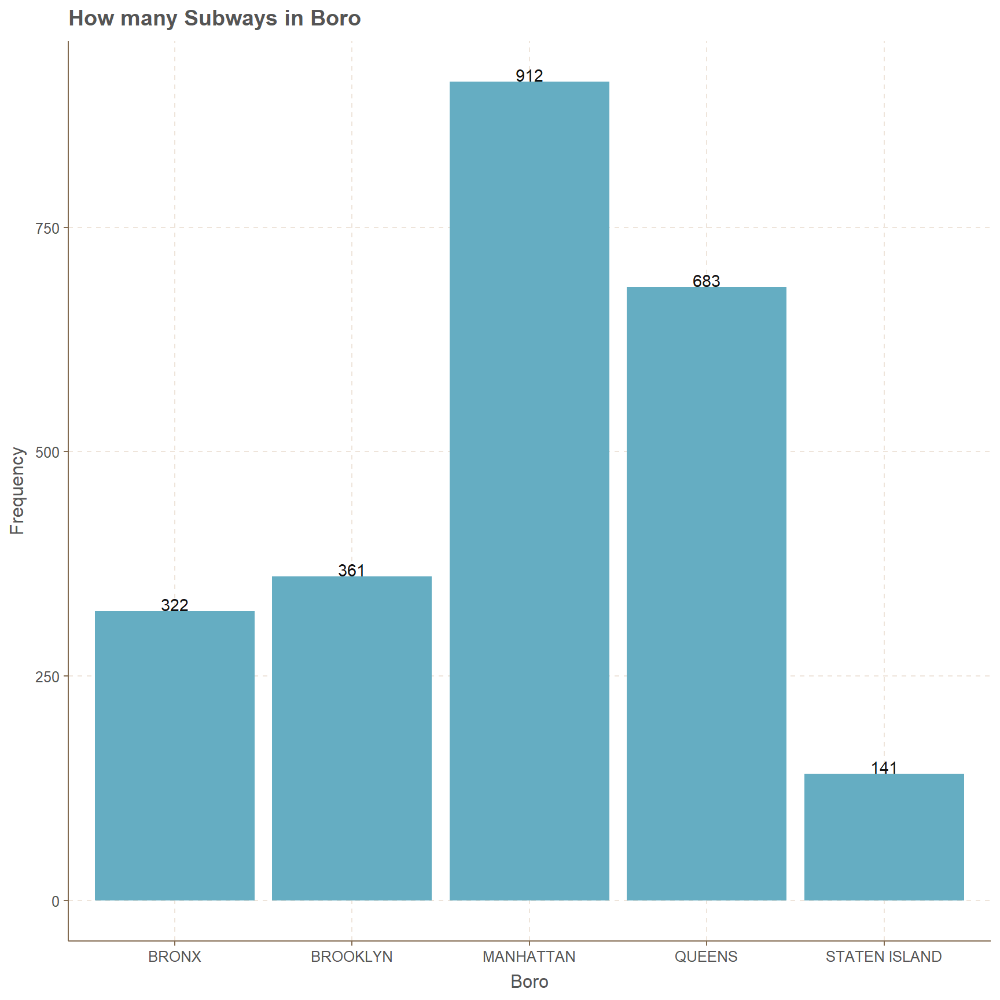
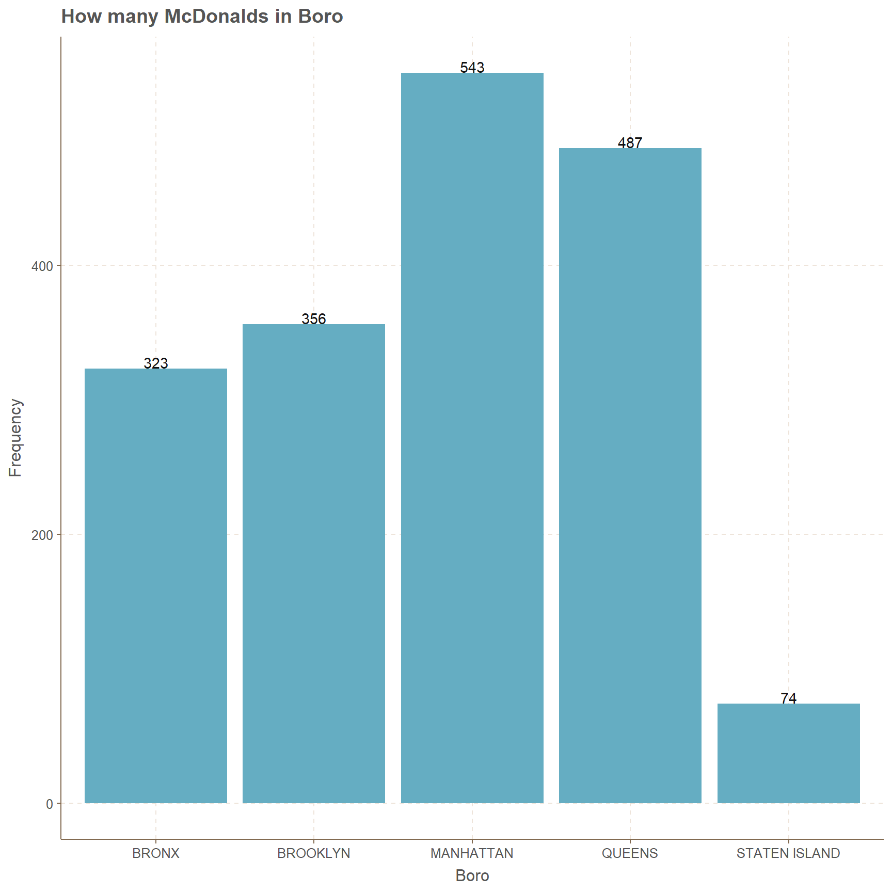
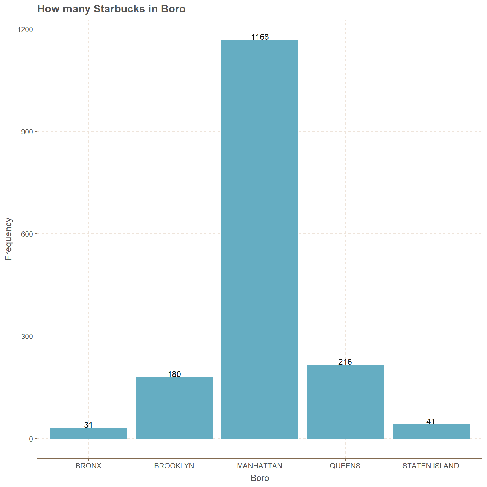

# load the packages
library(readr)
library(tidyverse)
library(magrittr)
library(ggthemr)
library(lubridate)
library(stringr)
library(kableExtra)
#using theme
ggthemr("fresh")
#load data
NYC<-read_csv("nyc_restaurants.csv",
col_types = cols(inspection_date =
col_date(format = "%m/%d/%Y")))
attach(NYC)Week 37: NYC Restaurants
TidyTuesday
2018
Data set is completed with more than 300000 records and several important variables such as inspection date, violation code, critical flag, score and violation description. In this article I will mainly focus on Inspection Type, boro, Inspection year, cuisine type and Critical Flag.
{{% tweet "1073204074579968000" %}}
First see what type of inspections have occurred.
Inspection Type
This ordered bar plot for inspection type clearly indicates that cycle inspection / initial inspection has the highest amount of counts with 171,657. while second place goes to cycle inspection/ re-inspection with 73207. Other types of inspection hold less than 21,000 counts, where there are more than 10 types of inspections which hold counts less than 1000.
#summary.factor(inspection_type) %>%
# sort()
# Bar plot for Insepction type
ggplot(NYC,aes(x=fct_infreq(str_wrap(inspection_type,35))))+
geom_bar()+coord_flip()+
scale_y_continuous(breaks = seq(0,200000,25000),labels = seq(0,200000,25000))+
geom_text(stat = "count",aes(label=..count..),hjust=-0.005)+
ylab("Frequency")+xlab("Type of Insepction")+
ggtitle("Types of Inspection")
Critical Flag
Critical flag has three types of categories which are Critical, Not Critical and Not Applicable. It is represented as a pie chart where 54.9% are critical(164,623) and second place goes to Not Critical(129,348) with 43.1%. Finally, only 6029 inspections have lead to Not Applicable which is represented by 2.0%.
#summary for critical flag
#NYC$critical_flag %>%
# summary.factor() %>%
# sum()
value=c(164623,6029,129348)
# creating data frame for Critical flag
CF<-data.frame(
group=c("Critical","Not Applicable","Not Critical"),
value=c(164623,6029,129348),
per=round(value*100/300000,4)
)
# pie chart for percentages
P1<-ggplot(CF,aes(x="",y=per,fill=group))+
geom_col()+ theme_void()+
geom_text(aes(label=scales::percent(per/100)),position=position_stack(vjust=0.5))+
labs(title = "Critical Flag \nDistribution",fill="Type")+
coord_polar(theta = "y",start = 0)
# pie chart for counts
P2<-ggplot(CF,aes(x="",y=value,fill=group))+
geom_col()+theme_void()+
labs(title = "Critical Flag\n Distribution",fill="Type")+
geom_text(aes(label = value), position = position_stack(vjust = 0.5)) +
coord_polar(theta = "y",start = 0)
gridExtra::grid.arrange(P1,P2,nrow=2)
Inspection Type and Critical Flag over the years
Now facing the issue of inspection year, inspection type and critical flag, I have generated bar plots for identifying the behavior. Basically what we have is bar plots for years from 2012 to 2018 how the counts of Critical flag types have changed for different paired types of inspections.
Inspection types considered
- Cycle Inspection / Initial Inspection and Cycle Inspection / Re-inspection.
- Pre-permit (Operational) / Initial Inspection and Pre-permit (Operational) / Re-inspection.
- Administrative Miscellaneous / Initial Inspection and Administrative Miscellaneous / Re-inspection.
Cycle Inspection
Initial Inspection is always high for all the years while assigning Critical. The years 2012, 2013 and 2014 has very low amount of counts while the succeeding years have increasing counts. Initial inspection over the years from 2015 is increasing for the gap between Critical and Not Critical. In 2015 the above gap is close to 4000 but by 2018 it has increased to 10000. If we consider Re-inspection the gap for Critical and Not Critical is close 1000 in year 2015 but by year 2018 it is 4000. Not applicable is increasing over the years for both initial inspection and re-inspection, even though the amounts are in hundreds.
# subsetting data
# Specific insepction type, critical flag and year with bar plot
subset(NYC,inspection_type=="Cycle Inspection / Initial Inspection" |
inspection_type=="Cycle Inspection / Re-inspection") %>%
ggplot(.,mapping=aes(x=str_wrap(inspection_type,8),fill=critical_flag))+
geom_bar(position = "dodge",stat = "count")+
facet_wrap(~year(inspection_date)) +
xlab("Cycle Inspection")+
ylab("Frequency")+
ggtitle("Cycle Inspection over the years for Critical Flag")+
labs(fill="Critical Flag")+
geom_text(stat = "count",aes(label=..count..),
position = position_dodge(width = 1), vjust = -0.05)
Pre-permit Operational
Second most considered type of inspection is Pre-permit Operational, where it begins from 2014. Even though in year 2014 the amounts for initial inspection and re-inspection are less than 20 in all three critical flag categories. Considering the gap between Critical and Not Critical for initial inspection over the years there is a clear increase. Where as in year 2015 the gap is slightly less than 400, next year it is close to 1000, but by year 2018 this gap is above than 2000.
In re-inspection for the year 2015 the gap is almost 150, yet with more inspections by 2018 the gap increases to 600. For, Not Applicable the counts do not have a clear increasing or decreasing pattern over the years.
# subsetting data
# Specific insepction type, critical flag and year with bar plot
subset(NYC,inspection_type=="Pre-permit (Operational) / Initial Inspection" |
inspection_type=="Pre-permit (Operational) / Re-inspection") %>%
ggplot(.,aes(x=str_wrap(inspection_type,8),fill=critical_flag))+
geom_bar(position = "dodge",stat = "count")+
facet_wrap(~year(inspection_date)) +
xlab("Pre-permit (Operational)")+
ylab("Frequency")+
ggtitle("Pre-permit (Operational) over the years for Critical Flag")+
labs(fill="Critical Flag")+
facet_wrap(~year(inspection_date)) +
geom_text(stat = "count",aes(label=..count..),
position = position_dodge(width = 1), vjust = -0.05)-1.png)
Administrative Miscellaneous
Very odd bar plot here than previous two plots for inspection types. There is no Critical type restaurants in the Administrative Miscellaneous inspection type. The counts begin from year 2014 but the amounts are less than 10. Clearly for initial inspections over the years from 2015 to 2018 the count for Not Applicable are increasing, but this is not the case for Not Critical.
In year 2015 the amount for the type Not Critical for initial inspection was 528, but in years 2016 and 2018 the amounts increased respectively to 1038 and 1486. Even though the amount decreased to 1015 in year 2017. The same pattern of increase and decrease behavior occurs for Re-inspection type as well.
# subsetting data
# Specific insepction type, critical flag and year with bar plot
subset(NYC,inspection_type=="Administrative Miscellaneous / Initial Inspection" |
inspection_type=="Administrative Miscellaneous / Re-inspection") %>%
ggplot(.,aes(x=str_wrap(inspection_type,8),fill=critical_flag))+
geom_bar(position = "dodge",stat = "count")+
facet_wrap(~year(inspection_date)) +
xlab("Administrative Miscellaneous")+
ylab("Frequency")+
ggtitle("Administrative Miscellaneous over the years for Critical Flag")+
labs(fill="Critical Flag")+
facet_wrap(~year(inspection_date)) +
geom_text(stat = "count",aes(label=..count..),
position = position_dodge(width = 1), vjust = -0.05)
Most Inspected Restaurants
First look at the top 5 restaurants which were inspected and clearly Dunkin’ Donuts has the highest amount with 3136, while second place goes to Subway with 2419 and third place goes to McDonald’s with 1783.
# Most 5 restaurants which were inspected
kable(summary.factor(dba) %>%
sort() %>%
tail(5)
,col.names = c("Frequency"),align = 'c') | Frequency | |
|---|---|
| KENNEDY FRIED CHICKEN | 1031 |
| STARBUCKS | 1636 |
| MCDONALD'S | 1783 |
| SUBWAY | 2419 |
| DUNKIN' DONUTS | 3136 |
Dunkin Donuts
Queens has close to 1000 observations of Dunkin Donuts and lowest amount goes to Staten Island with 308. Other three boros have counts in between 550 and 710.
# subsetting Dunkin Donuts with boro
subset(NYC, dba=="DUNKIN' DONUTS") %>%
ggplot(.,aes(x=boro))+
geom_bar(position = "dodge",stat = "count")+
geom_text(stat = "count",aes(label=..count..), vjust = -0.05)+
ggtitle("How many Dunkin Donuts in a Boro")+
xlab("Boro")+ylab("Frequency")
There are only 5 cuisine types and prominent ones are American, Donuts and drinks(Cafe/Coffee/Tea). Year 2014 is very low in amounts even for cuisine Donuts, but this is not the case over the next few years and the scores are mostly centered between 5 to 15. Bagels/Pretzels and Jewish/ Kosher have least amount of data where none of scores are above 25. It is safe to to say we have more Critical type data and they are mostly close to the score of 10.
# Dunkin Donuts and scores with critical flag
subset(NYC, dba=="DUNKIN' DONUTS") %>%
ggplot(.,mapping=aes(y=score,color=critical_flag,x=factor(year(inspection_date))))+
geom_jitter(alpha=0.3)+labs(color="Critical Flag")+
ggtitle("Dunkin Donuts score changes with Critical Flag for Cuisines")+
xlab("Critical Flag")+ylab("Score")+
scale_y_continuous(breaks = seq(0,60,5),labels =seq(0,60,5))+
facet_wrap(~cuisine_description) 
Subway
912 points from Manhattan with the highest count and lowest count goes to Staten Island with 141 counts. Bronx and Brooklyn has counts in between 320 and 365, but Queens boro has an amount of 683.
# subsetting Subway with boro
subset(NYC, dba=="SUBWAY") %>%
ggplot(.,aes(x=boro))+
geom_bar(position = "dodge",stat = "count")+
geom_text(stat = "count",aes(label=..count..), vjust = -0.05)+
ggtitle("How many Subways in Boro")+
xlab("Boro")+ylab("Frequency")
Subway has only 5 cuisines which are American, Other, Sandwiches, Sandwiches/Salads/Mixed Buffet and Soups & Sandwiches. In these five categories only Sandwiches has significant amount of data points. Oddly, we can see the year 1900 in the x axis and which means error.
In Sandwiches category there are more points which are centered in between 5 to 15 in scores, while most of them are Not Critical. Oddly in 2018 there are Critical data points with scores above 55 in Sandwiches cuisine type.
For the Other category there are only 4 observations which are in 2018 and 75% of them are Not Critical. Considering American Cuisines there are points in all 4 years and most of them are less than 25% and Not Critical.
# Subway and scores with critical flag
subset(NYC, dba=="SUBWAY") %>%
ggplot(.,mapping=aes(y=score,color=critical_flag,x=factor(year(inspection_date))))+
geom_jitter(alpha=0.3)+ labs(color="Critical Flag")+
ggtitle("Subway score changes with Critical Flag for Cuisines")+
xlab("Critical Flag")+ylab("Score")+
scale_y_continuous(breaks = seq(0,80,5),labels =seq(0,80,5))+
facet_wrap(~cuisine_description) 
McDonalds
Close to 550 data points are from Manhattan boro, but Staten Island boro has points close to 75. Second place of 487 counts goes to Queens boro. Other two boros, which are Bronx and Brooklyn have counts in the range of 320 and 360.
# subsetting McDonalds with boro
subset(NYC, dba=="MCDONALD'S") %>%
ggplot(.,aes(x=boro))+
geom_bar(position = "dodge",stat = "count")+
geom_text(stat = "count",aes(label=..count..), vjust = -0.05)+
ggtitle("How many McDonalds in Boro")+
xlab("Boro")+ylab("Frequency")
Only the cuisines Other and Sandwiches/Salads/Mixed Buffet has data points in the years 2017 and 2018 and these points have an amount less than 15 in both cases. Considering the other two cuisines which are American and Hamburgers, there are more points in the latter than in the former. It should be noted that Hamburgers cuisine has mostly points centered close to the score range of 5 to 10, and these points are mostly Not Critical.
In American cuisine for the year 2016 there are 5 points which have scores close to 70, even though in any other year this has not occurred. To be more precise, except those 5 points all the others have scores less than 45 for American Cuisine.
# McDonalds and scores with critical flag
subset(NYC, dba=="MCDONALD'S") %>%
ggplot(.,mapping=aes(y=score,color=critical_flag,x=factor(year(inspection_date))))+
geom_jitter(alpha=0.3)+
labs(color="Critical Flag")+
ggtitle("McDonalds score changes with Critical Flag for Cuisines")+
xlab("Critical Flag")+ylab("Score")+
scale_y_continuous(breaks = seq(0,80,5),labels =seq(0,80,5))+
facet_wrap(~cuisine_description) 
Starbucks
There are more than 1100 Starbucks in Manhattan only while other boros have less than 220 and lowest amount goes to Bronx with 31. Second lowest goes to Staten Island with 41.
#subsetting Starbucks with boro
subset(NYC, dba=="STARBUCKS") %>%
ggplot(.,aes(x=boro))+
geom_bar(position = "dodge",stat = "count")+
geom_text(stat = "count",aes(label=..count..), vjust = -0.05)+
ggtitle("How many Starbucks in Boro")+
xlab("Boro")+ylab("Frequency")
Starbucks is mainly focused on Cafe/Coffee/Tea rather than cuisines such as Pizza, Sandwiches, American and other. Clearly there are negligible amount of data points in those four categories, except American cuisine.
If we focus on Drinks(Coffee/Cafe/Tea), evidently most of them are Not Critical and they are centered around the score of 0 to 10. Even though scores higher than 15 do occur they are spread out widely. This is a common occurrence for all four years, which is from 2015 to 2018.
# Starbucks and scores with critical flag
subset(NYC, dba=="STARBUCKS") %>%
ggplot(.,mapping=aes(y=score,color=critical_flag,x=factor(year(inspection_date))))+
geom_jitter(alpha=0.3)+
labs(color="Critical Flag")+
ggtitle("Starbucks score changes with Critical Flag for Cuisines")+
xlab("Critical Flag")+ylab("Score")+
scale_y_continuous(breaks = seq(0,80,5),labels =seq(0,80,5))+
facet_wrap(~cuisine_description) 
Kennedy Fried Chicken
Bronx the has most amount observations to Kennedy Fried Chicken’s with 626 while lowest count of 5 is from Staten Island. Other three boros have counts in the range of 75 to 190.
#subsetting Kennedy Fried Chicken with boro
subset(NYC, dba=="KENNEDY FRIED CHICKEN") %>%
ggplot(.,aes(x=boro))+
geom_bar(position = "dodge",stat = "count")+
geom_text(stat = "count",aes(label=..count..), vjust = -0.05)+
ggtitle("How many Kennedy Fried Chicken's in Boro")+
xlab("Boro")+ylab("Frequency")
There are only four cuisines which are related to Kennedy Fried Chicken, and they are American, Chicken, Hamburgers and other. The categories Hamburgers and Other have very less amount of counts and the year 1900 is also mentioned. For Hamburgers cuisine only the year 2017 has significant amount of data points, where the year 2015 has only one and year 2018 has only two points.
Further, the scores for these points are always less than 20 and mostly Critical. Cuisines of Chicken has more data points than American but in both types there is no clear centering of data around a certain score.
# Kennedy Fried Chicken and scores with critical flag
subset(NYC, dba=="KENNEDY FRIED CHICKEN") %>%
ggplot(.,mapping=aes(y=score,color=critical_flag,x=factor(year(inspection_date))))+
geom_jitter(alpha=0.3)+
labs(color="Critical Flag")+
ggtitle("Kennedy Fried Chicken score changes with Critical Flag")+
xlab("Critical Flag")+ylab("Score")+
scale_y_continuous(breaks = seq(0,80,5),labels =seq(0,80,5))+
facet_wrap(~cuisine_description) 
Conclusion
My conclusion of the above plots and a table in point form
facet wrap is very useful.
Adding colors makes it more useful for the plots.
Generating pie chart using bar chart looks good.
Further Analysis
It is possible to focus on violation codes.
Further looking at the cuisines we can divide it based on the boros as well.
THANK YOU